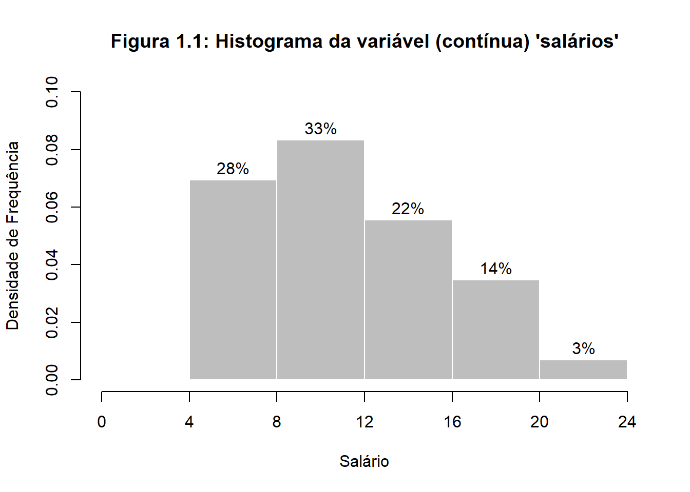
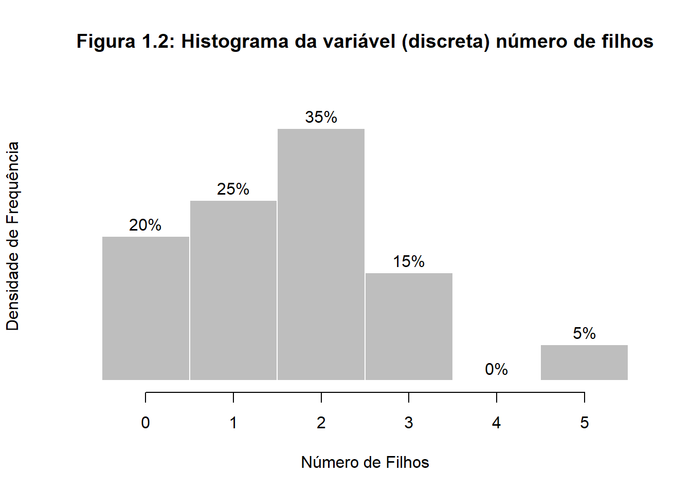
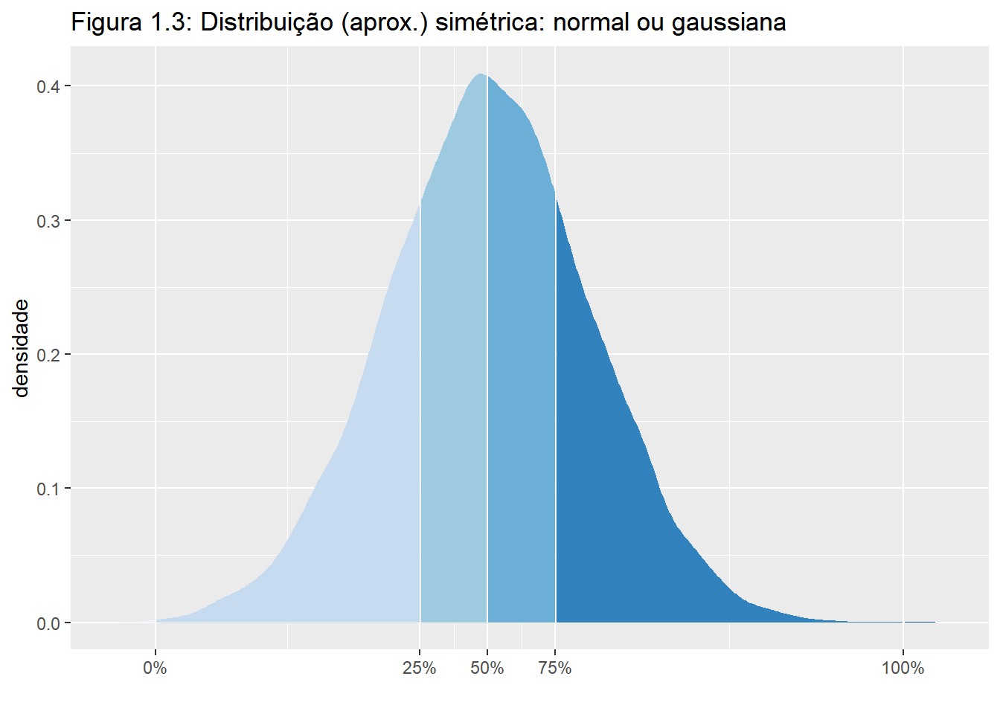
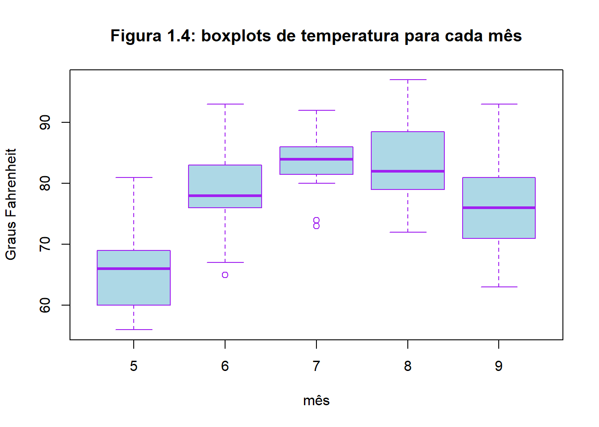

Texto de referência: Estatística Básica - Wilton de O. Bussab & Pedro A. Morettin
A Análise Exploratória de Dados (AED) visa obter dos dados a maior quantidade possível de informação, que indique modelos plausíveis a serem utilizados numa fase posterior, a análise confirmatória de dados (ou inferência estatística1) .
Fundamentalmente, quando se procede a uma análise de dados, busca-se alguma forma de regularidade ou padrão ou, ainda, modelo, presente nas observações.
Queremos conhecer o comportamento de uma variável, analisando a ocorrência de suas possíveis realizações.
Usaremos a notação \(n_i\) para indicar a frequência (absoluta) de cada classe, ou categoria, de uma variável, e a notação \(f_i=n_i/n\) para indicar a proporção (ou frequência relativa) de cada classe, sendo \(n\) o nº total de observações.
O histograma é um gráfico de barras contíguas, com bases proporconais aos intervalos das classes e a área de cada retângulo proporcional à respectiva frequência. Pode-se usar tanto a frequência absoluta, \(n_i\), como a relativa, \(f_i\). Indiquemos a amplitude do i-ésimo intervalo por \(\Delta_i\). Para que a área do retângulo respectivo seja proporcional a \(f_i\), a sua altura deve ser proporcional a \(f_i/\Delta_i\) (ou a \(n_i/\Delta_i\)), que é a densidade de frequência da i-ésima classe. Com essa convenção, a área total do histograma será igual a 1.
Quando os intervalos das classes forem todos iguais a \(\Delta\), a densidade de frequência da i-ésima classe passa a ser \(f_i/\Delta\) ou \(n_i/\Delta\)).
Obs.: o exemplo a seguir foi extraído diretamente do livro de referência; os dados e códigos base necessários para a reprodução dos exemplos originais do livro em liguagem R podem ser obtidos no site do IME USP. Este tutorial é apenas uma seleção de trechos do livro e faz algumas adaptações aos códigos originais. Os códigos deste tutorial estão disponíveis aqui.
| Nº | estado civil | grau de instrução | nº de filhos | salário | idade anos | idade meses | região de procedência |
|---|---|---|---|---|---|---|---|
| 1 | solteiro | ensino fundamental | NA | 4.00 | 26 | 3 | interior |
| 2 | casado | ensino fundamental | 1 | 4.56 | 32 | 10 | capital |
| 3 | casado | ensino fundamental | 2 | 5.25 | 36 | 5 | capital |
| 4 | solteiro | ensino médio | NA | 5.73 | 20 | 10 | outra |
| 5 | solteiro | ensino fundamental | NA | 6.26 | 40 | 7 | outra |
| 6 | casado | ensino fundamental | 0 | 6.66 | 28 | 0 | interior |
| 7 | solteiro | ensino fundamental | NA | 6.86 | 41 | 0 | interior |
| 8 | solteiro | ensino fundamental | NA | 7.39 | 43 | 4 | capital |
| 9 | casado | ensino médio | 1 | 7.59 | 34 | 10 | capital |
| 10 | solteiro | ensino médio | NA | 7.44 | 23 | 6 | outra |
| salários | |
|---|---|
| Min. | 4.00000 |
| 1st Qu. | 7.55250 |
| Median | 10.16500 |
| Mean | 11.12222 |
| 3rd Qu. | 14.06000 |
| Max. | 23.30000 |
| Frequência \(n_i\) | Proporção \(f_i\) | Porcentagem \(f_i\) | |
|---|---|---|---|
| ensino fundamental | 12 | 0.33 | 33.33 |
| ensino médio | 18 | 0.50 | 50.00 |
| superior | 6 | 0.17 | 16.67 |
| Total | 36 | 1.00 | 100.00 |
| Frequência \(n_i\) | Porcentagem \(f_i\) | |
|---|---|---|
| [4,8) | 10 | 27.78 |
| [8,12) | 12 | 33.33 |
| [12,16) | 8 | 22.22 |
| [16,20) | 5 | 13.89 |
| [20,24) | 1 | 2.78 |
| Total | 36 | 100.00 |

Podemos reduzir ainda mais os dados, apresentando um ou alguns valores que sejam representativos de toda a série. Usualmente, emprega-se uma das seguintes medidas de posição (ou localização) central: média, mediana ou moda.
A moda é definida como a realização mais frequente do conjunto de valores observados. Em alguns casos, pode haver mais de uma moda, ou seja, a distribuição dos valores pode ser bimodal, trimodal etc. Para calcular a moda precisamos apenas da distribuição de frequências (contagem).
A mediana é a realização que ocupa a posição central da série de observações, quando estão ordenadas em ordem crescente. Quando o nº de obs. for par, usa-se como mediana a média aritmética das duas observações centrais.
A média aritmética é a soma das observações dividida pelo nº delas.
Se \(x_1, \ ..., x_n\) são os \(n\) valores (distintos ou não) da variável \(X\), a média aritmética, ou simplesmente média, de \(X\) pode ser escrita
\[\overline x= \frac{x_1+...+x_n}{n}=\frac{1}{n}\sum^n_{i=1}x_i \ \ \ \ \ \ \ \ \ \ \ \ \ \ \ \ \ \ \ \ (1.1)\]
Se tivermos \(n\) observações da variável \(X\), das quais \(n_1\) são iguais a \(x_1\), \(n_2\) são iguais a \(x_2\) etc., \(n_k\) iguais a \(x_k\), então a média de \(X\) pode ser escrita
\[\overline x=\frac{n_1x_1+...+n_kx_k}{n}=\frac{1}{n}\sum^k_{i=1}n_ik_i \ \ \ \ \ \ \ \ \ \ \ \ \ \ \ \ \ \ \ \ (1.2)\]
Se \(f_i=n_i/n\) representar a frequência relativa da observação \(x_i\), então \((1.2)\) também pode ser escrita
\[\overline x=\sum^k_{i=1}f_ix_i \ \ \ \ \ \ \ \ \ \ \ \ \ \ \ \ \ \ \ \ (1.3)\]
As observações quando ordenadas em ordem decrescente são chamadas estatísticas de ordem. Caso ordenada, a mediana da variável X pode ser definida como
\[md(X)=\begin{cases} x_{(\frac{n+1}{2})}, \ \ \ \text{se n ímpar;} \\\\ {\frac{x_{(\frac{n}{2})} \ + \ \ x_{({\frac{n}{2}+1})}}{2}}, \ \ \ \text{se n par.} \end{cases} \ \ \ \ \ \ \ \ \ \ \ \ \ \ \ \ \ \ \ \ (1.4)\]
Um critério frequentemente usado para comparar conjuntos diferentes de valores é aquele que mede a dispersão dos dados de em torno de sua média, e duas medidas são as mais usadas: desvio médio e variância. O princípio básico é analisar os desvios das observações em relação à média dessas observações: \(x_i-\bar x\)
\[\sum_{i=1}^n (x_i-\bar x)=0\]
\[\sum_{i=1}^n |x_i-\bar x|\]
\[\sum_{i=1}^n (x_i-\bar x)^2\]
\[dm(X)=\frac{\sum_{i=1}^n |x_i-\bar x|}{n}, \ \ \ \ \ \ \ \ \ \ \ \ \ \ \ \ \ \ \ \ (1.5)\]
\[var(X)=\frac{\sum_{i=1}^n(x_i-\bar x)^2}{n} \ \ \ \ \ \ \ \ \ \ \ \ \ \ \ \ \ \ \ \ (1.6)\]
Valores próximos de zero indicam maior homogeneidade dos dados.
Sendo a variância uma medida de dimensão igual ao quadrado da dimensão dos dados costuma-se usar o desvio padrão, que é definido como
\[dp(X)=\sqrt{var(X)} \ \ \ \ \ \ \ \ \ \ \ \ \ \ \ \ \ \ \ \ (1.7)\]
Ambas as medidas de dispersão (dm e dp) indicam em média qual será o “erro” (desvio) cometido ao tentar substituir cada observação pela medida resumo do conjunto de dados (no caso, a média).
Suponha que observemos \(n_1\) vezes os valores \(x_1\) etc., \(n_k\) vezes o valor \(x_k\) da variável \(X\). Então,
\[dm(X)=\frac{\sum_{i=1}^k n_i|x_i-\bar n|}{n}=\sum_{i=1}^k f_i|x_i-\bar x| \ \ \ \ \ \ \ \ \ \ \ \ \ \ \ \ \ \ \ \ (1.8)\]
\[var(X)=\frac{\sum_{i=1}^k n_i(x_i-\bar n)^2}{n}=\sum_{i=1}^k f_i(x_i-\bar x)^2 \ \ \ \ \ \ \ \ \ \ \ \ \ \ \ \ (1.9)\]
Assim como a média, a variância (ou desvio padrão) é uma boa medida se a distribuição dos dados for aproximadamente normal.
A média e o desvio padrão podem não ser medidas adequadas para representar um conjunto de dados, pois
são afetados, de forma exagerada, por valores extremos;
apenas com estes valores não temos ideia da simetria ou assimetria da distribuição dos dados
Para contornar esses fatos outras medidas têm que ser consideradas.
Vimos que a mediana, descrita na fórmula \((1.4)\), é um valor que deixa metade dos dados abaixo dela e metade acima . De modo geral, podemos definir uma medida, chmada quantil de ordem p ou p-quantil, indicada por \(q(p)\), onde \(p\) é uma proporção qualquer, \(0<p<1\), tal que 100p% das observações sejam menores do que \(q(p)\).
Dizemos que a mediana é resistente ou robusta, no sentido de que ela não é muito afetada por valores extremos.
Uma medida de dispersão alternativa ao desvio padrão é a distância interquartil, definida como a diferença entre o terceiro e primeiro quartis, ou seja,
\[d_q=q_3-q_1 \ \ \ \ \ \ \ \ \ \ \ \ \ \ \ \ (2.1)\]
Os quartis \(q(0,25)=q_1, \ q(0,5)=q_2, \ q(0,75)=q_3\) são medidas de localização resistentes de uma distribuição.
Definição. O p-quantil é definido por
\[
q(p)=\begin{cases} x_{(i)}, \ \ \ \ \ \ \ \ \ \ \ \ \ \ \ \ \ \ \ \ \ \ \ \ \ \ \ \ \ \ \ \ \ \ \ \ se \ p=p_i=\frac{i-0,5}{n}, i=1,2, ...,n \\\\ (1-f_i)x_(i) \ + \ f_ix_{(i+1)}, \ \ \ se \ p_i<p<p_{i+1} \\\\ x_(i), \ \ \ \ \ \ \ \ \ \ \ \ \ \ \ \ \ \ \ \ \ \ \ \ \ \ \ \ \ \ \ \ \ \ \ \ se \ p<p_1 \\\\ x_(n), \ \ \ \ \ \ \ \ \ \ \ \ \ \ \ \ \ \ \ \ \ \ \ \ \ \ \ \ \ \ \ \ \ \ \ \ se \ p<p_n\end{cases}
\]
onde \(f_i=\frac{(p-p_i)}{p_{i+1}-p_i}\).
Os cinco valores, \(x_{(1)}, \ q_1, \ q_2, \ q_3 \ e \ x_{(n)}\) são importantes para se ter uma boa ideia da assimetria da distribuição dos dados.
Para uma distribuição simétrica ou aproximadamente simétrica, deveríamos ter:
\((a) \ q_2-x_{(1)}\approx x_{(n)}-q_2;\)
\((b) \ q_2-q_1\approx q_3-q_2;\)
\((c) \ q_1-x_{(1)}\approx x_{(n)}-q_3;\)
\((d) \ \text{distâncias entre mediana e} \ q_1, \ q_3 \ \text{menores do que distâncias entre os extremos} \ q_1, \ q_3.\)
A diferença \(q_2-x_{(1)}\) é chamada dispersão inferior e \(x_{(n)}-q_2\) é a dispersão superior.

A informação contida no esquema dos cinco números pode ser traduzida graficamente num diagrama que chamaremos de box plot.
O box plot dá uma ideia da posição, dispersão, assimetria, caudas e dados discrepantes.
Para construir este diagrama, consideremos um retângulo onde estão representados a mediana e os quartis. A linha que segue do retângulo atinge os limites superior \(LS=q_3+3/2 \ d_q\) e inferior \(LI=q_1-3/2 \ d_q\). As observações para além dos limites serão chamadas pontos exteriores e representadas por asteriscos. Essas são observações destoantes das demais e podem ou não ser o que chamamos de outliers ou valores atípicos.

A justificativa para usarmos os limites é a seguinte: considere uma curva normal com média zero e, portanto, com mediana zero. Neste caso, \(q_1=-0,6745\), \(q_2=0\), \(q_3=0,6745\) e portanto \(d_q=1,349\). Segue-se que os limites são \(LI=-2,698\) e \(LS=2,698\). A área entre os dois valores abaixo da curva normal é \(0,993\), ou seja, \(99,3%\) da distribuição está entre esses dois valores. Isto é, para dados com distribuição normal, os pontos exteriores constituirão cerca de \(0,7%\) da distribuição.
Se um conjunto de informações for perfeitamente simétrico demovos ter
\[q(1/2)-x_{(i)}=x_{(n \ + \ 1 \ - \ i)} \ -q(1/2)\]
onde \(i=1,2, \ ..., n/2\), se \(n\) for par e \(i=1,2, \ ..., (n+1)/2\), se \(n\) for ímpar.
\[\Re\]
Inferência Estatística é o estudo de técnicas que possibilitam a extrapolação, a um grande conjunto de dados, das informações e conclusões obtidas a partir da amostra.↩︎
Variáveis discretas: quando o conjunto de resultados possíveis é finito ou enumerável. Variáveis contínuas: quando os valores são expressos como intervalo ou união de números reais.↩︎